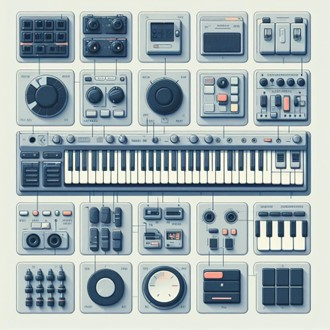

Different Aspects of MIDI Keyboards

If you're looking for a new way to express your creativity and make some awesome tunes,
you might want to consider getting a MIDI keyboard. A MIDI keyboard is a device that lets
you control various sounds and instruments on your computer or other devices using a keyboard
interface.
Sounds cool, right? But not all MIDI keyboards are the same. There are different features that you
should
look for depending on your needs and preferences. In this blog post, I'll go over some of the most
common
and useful features of MIDI keyboards and how they can enhance your musical experience. Let's get
started!
Number of Keys
This is probably the most obvious feature to consider when choosing a MIDI keyboard. The number
of keys determines how many notes you can play at once and how wide of a range you have. Most
MIDI keyboards have either 25, 49, 61, or 88 keys, but there are also some with fewer or more keys.
The more keys you have, the more expressive and versatile you can be, but also the more space and
money you'll need. If you're just starting out or have limited space or budget, a 25-key or 49-key
MIDI keyboard might be enough for you. But if you're more advanced or want to play complex chords
and melodies, you might want to go for a 61-key or 88-key MIDI keyboard. Also note that the 25-key
controllers allow you to go up or down octaves which allows you to play more notes and pitches.
Weighted Keys
Another feature to consider is how the keys feel when you press them. Some MIDI keyboards have
weighted keys, which means they have some resistance and bounce back like a real piano.
This can make playing more realistic and dynamic, especially if you're used to playing acoustic
pianos.
Other MIDI keyboards have semi-weighted keys, which are lighter and easier to press, but still have
some feedback. And some MIDI keyboards have synth-action keys, which are very light and springy,
and don't require much force to play. This can make playing faster and smoother, especially
if you're used to playing synthesizers or organs. The best type of key action depends on your
personal preference and style of music.
Knobs, Sliders, Pads, and Buttons
Besides the keys, some MIDI keyboards also have other controls that let you adjust various
parameters of the sounds and effects you're using. These can include knobs, sliders, pads, and
buttons.
Knobs and sliders are great for tweaking things like volume, pitch, filter, modulation, and more.
Pads are great for triggering drums, samples, loops, and more. Buttons are great for switching
between different sounds, modes, presets, and more. Having these extra controls can give you more
flexibility and creativity when making music with your MIDI keyboard.
Connectivity
The last feature to consider is how your MIDI keyboard connects to your computer or other devices.
Most MIDI keyboards use USB cables, which are easy and convenient to use. You just plug them in
and they're ready to go. Some MIDI keyboards also have MIDI ports, which let you connect them
to other MIDI devices like synthesizers, drum machines, or sound modules. This can expand your
sonic possibilities and let you use multiple devices at once. Some MIDI keyboards also have
Bluetooth
connectivity, which lets you connect them wirelessly to your computer or mobile devices. This can
make your setup more portable and clutter-free.
MIDI keyboards are great for learning the piano and they can help you learn piano chords easily.
Learning piano chords can help you improve your musical skills, such as ear training, harmony,
melody, rhythm, and improvisation. You may consider picking up a MIDI keyboard for the following
reasons:
- You can use your MIDI keyboard to play along with online tutorials or videos that teach you how to play easy piano chords and songs.
- You can use your MIDI keyboard to practice simple piano chords for beginners using apps like MIDIScale that show you the notes on a virtual keyboard.
- You can use your MIDI keyboard to experiment with different chord progressions and patterns using apps or software that generate random or customized chord sequences.
- You can use your MIDI keyboard to record your own piano chord progressions and songs using apps or software that let you edit, mix, and share your music.
So there you have it! These are some of the most important features to look for when choosing a MIDI keyboard. I hope this blog post helped you understand the essential features of a MIDI keyboard and how you use them. And if you're ready to get your own MIDI keyboard, check out this article about the most affordable ones.
Join the mailing list to gain access to our bi-weekly newsletter and software updates!
This site is protected by reCAPTCHA and the Google Privacy Policy and Terms of Service apply.